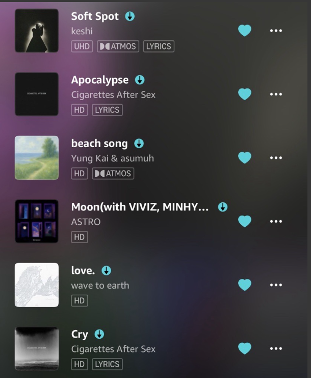
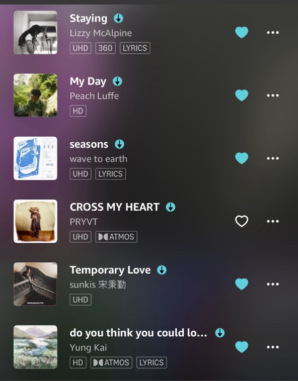
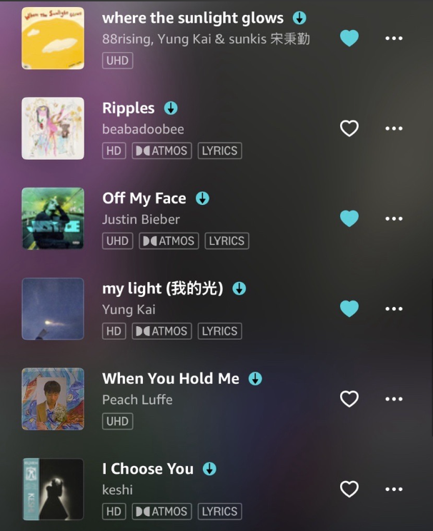
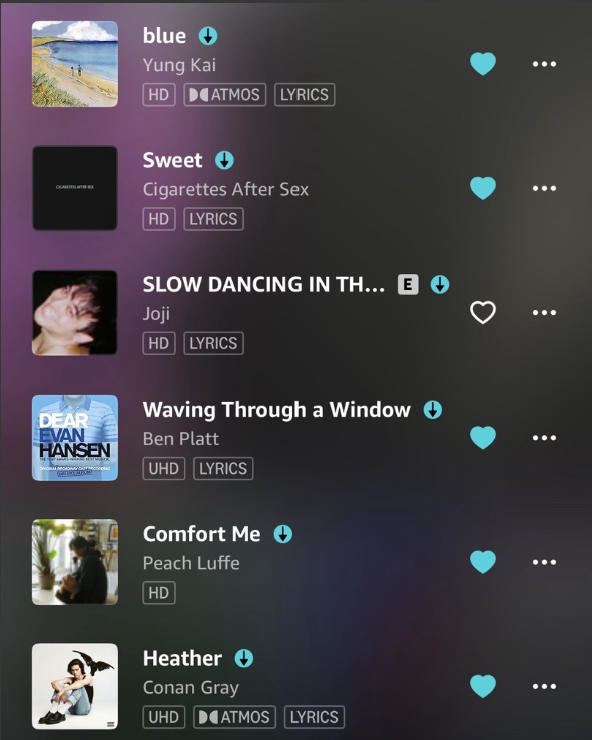
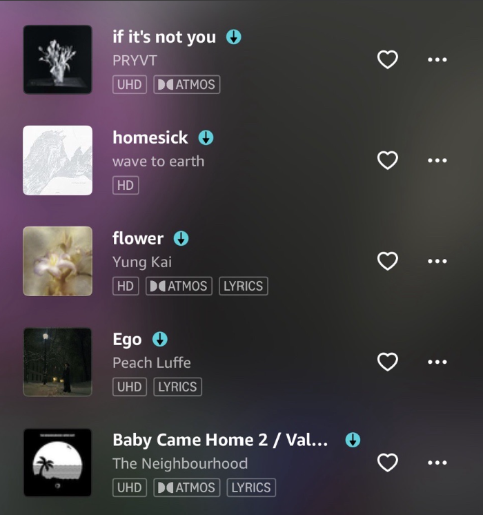

Keshi: I really like the soft vibes of his songs, which are nice to do homework to or just relax and listen to. Some of his songs are more up-beat and rock-style-ish, but I tend to listen to his calmer songs more often. Some of my favorite songs of his are "Soft Spot", "drunk", and "I choose You".
Wave to Earth: This three-member band also has a very calm vibe to their songs. All of their songs are very similar to one-another, but my favorite songs that I listen to a lot are "seasons", "love.", and "homesick".
Peach Luffe: I really like this artist because of his songs' calmness, too. He's a pretty small artist, so he's not known by many people, but he writes a lot of his songs about kdramas. He also goes live on TikTok a lot, and sings live while playing the guitar. Some of his songs that I like are "My Day", "When You Hold Me", and "Comfort Me".
Yung Kai: This is another artist that I listen to a lot because of his soothing music. He's still really young, but he's had a few concerts, and has an upcoming tour. Some of my favorite songs of his are "beach song", "do you think you could love me?", and "my light".
CAS: This is another three-member band that I really like. Their music also always stays in one genre, but my favorite songs of theirs are "Apocalypse", "Cry", and I can't pick if I like "Sunsetz" or "Sweet" more.
Stray Kids: This boy-group has a lot of songs in a lot of different genres. I usually don't prefer their loud, rap songs, but they still have a lot of other songs that I enjoy. Stray Kids has a lot of good vocals, dance, and rap. All of the members are also very funny, and really good people. It's honestly hard to pick my favorite songs, even just top three. But if I had to recomend songs I would say "U (Feat. TABLO)" and "CASE 143" if you like more upbeat music, "DIVINE" and "CIRCUS" if you like rap, and "Stars and Raindrops" and "Gone Away" if you prefer listening to calmer vocals.
Illit: This girl-group are known for having a very cute vibe to them. Their music leans to one upbeat and happy genre. They're a k-pop group, but they have two Japanese members and release a lot of songs in Japanese, including the single they just released called "Sunday Morning". Some of my favorite songs of theirs are "NOT CUTE ANYMORE", "ALL FOR YOU", and "Lucky Girl Syndrome".
Enhypen: This boy-group have a lot of great vocalists and dancers. They recently released a new album, which I recommend. They are known for resembling vampires, which is definitely represented in their songs, but the concept in their new album is supposed to be "cowboys". My favorite songs of theirs are "Helium", "Fatal Trouble", and "Stealer" (which they just released).
P1harmony: This boy-group is genuinely the funniest group I know. This group also has some VERY good vocalists. They also have great rappers and dancers, but everyone is mainly good at one thing. Some of their songs that I really like are "Dancing Qeen", "Pretty Boy", and "Fall In Love Again".
Cortis:This boy-group debuted in late 2025, so they're pretty new, meaning they don't have many songs, but I really like "What You Want" and "Joyride". This group has some pretty young members, with the youngest being 16. The leader of their group is 6'3". One of their members is Thai and Chinese and can speak English, Korean, Mandarin, Thai, and some Japanese.
Close Your Eyes: This boy-group also has members that are really young, making them really playful and fun. They also have some really good vocalists. My favorite songs of theirs are "Snowy Summer", "X", and "You".
Tomorrow x Together: This boy-group has some of the best vocalists, in my opinion. The group usually sticks to two main genres; instrumental and pretty, or upbeat and loud. Both genres are great, especially since TxT writes and composes their songs well. Some of their songs that I love are "Take My Half", "Ghost Girl", and the Japanese version of "Song of the Stars". But this group has so many great songs that I really want to include.
Meovv: This girl-group has a very cool vibe to them, which they include in their songs. I don't love all of their songs, but some of them are really catchy, espesially "Hands Up", but also "Burning Up".
Lngshot: This four member boy-group just debuted on January 13. They already have 12 songs, not including their 3 remixes. Their youngest member is only 15, but he is really talented. The whole group has very good vocals and the two main rappers are very good. For a while, Lngshot was called "evil cortis" because they have a similar vibe to cortis, they're also new, and they have a "harsher"/intimidating vibe, even though they're not harsh or mean in any way. My favorite of their songs are "Moonwalkin'", "Never Let Go", and "Next 2 U".
- This playlist has 29 songs, making it 1 hour and 45 minutes. But my other playlist with k-pop songs has 92 songs, making it 4 hours and 34 minutes, so I won't include pictures for it -
    